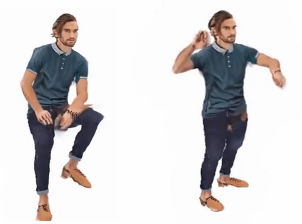
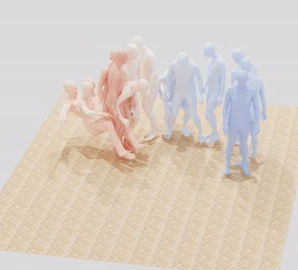
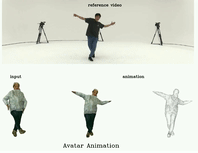
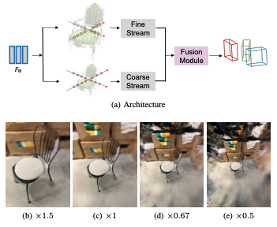

I am a third-year PhD student (2020.09-) at the Perceiving Systems
Department of Max Planck Institute for Intelligent Systems , jointly
supervised by Michael J. Black and Siyu Tang , and work closely with Justus Thies .
Before that, I achieved my M.S. from Peking University and earned my B.S. from Beijing University of Posts and
Telecommunications .
My main research is mainly drived by the goal of developing autonomous digital avatars which can interact
with real humans in the physical/virtual world (AR/VR) .
My research has mainly focused on capturing human-scene interaction
from RGB videos through computer vision and machine learning;
My work further on how to generate plausible human-scene interaction, to build the loop between scenes from
humans (scene generation ) and humans from scenes (motion generation );
To empower digital avatar with expressive communication ability, my work has extended to creating high-fidelity animatable expressive avatar from single image or text
based on implicit function and LLM; and expressive holistic body motion generation from audio through
generative modeling.
More broadly, I am super interested in revolutionalizing the cinema and creating immersive telecommunication with
autonomous life-like digital avatar creation technology.
I will be on job market in 2024, and am actively looking for research internship opportunity in Spring 2024, and full-time job in big companies or start-ups after Summer 2024.
News
POCO: 3D Pose and Shape Estimation using Confidence
Sai Kumar Dwivedi ,
Cordelia Schmid ,
Hongwei Yi ,
Michael J. Black ,
Dimitris Tzoinas ,
arXiv , 2023
code
/
arXiv
/
video
/
project
Learning HPS (human pose shape) estimation with confidence (hot: not confident, cold: confident).
Real-time Monocular Full-body Capture in World Space via Sequential
Proxy-to-Motion Learning
Yuxiang Zhang ,
Hongwen Zhang ,
Liangxiao Hu ,
Hongwei Yi ,
Shengping Zhang ,
Yebin Liu
arXiv , 2023
code
/
arXiv
/
project
Real-time motion capture from RGB video by learning the mapping from 2D detected joints to 3D body mesh in world space.
TADA! Text to Animatable Digital Avatars
Tingting Liao* ,
Hongwei Yi* ,
Yuliang Xiu ,
Jiaxiang Tang ,
Yangyi Huang ,
Justus Thies ,
Michael J. Black
(* denotes equal contribution)
arXiv , 2023
code
/
arXiv
/
video
/
project
text to animatable full-body avatars based on T2I (I: image; T: text) model.
TeCH: Text-guided Reconstruction of Lifelike Clothed
Humans
Yangyi Huang* ,
Hongwei Yi* ,
Yuliang Xiu* ,
Tingting Liao ,
Jiaxiang Tang ,
Deng Cai ,
Justus Thies
(* denotes equal contribution)
arXiv , 2023
code
/
arXiv
/
project
A high-fidelity mesh-based full-body avatar reconstruction from a single image with text assistancy from I2T and T2I models.
GraMMaR: Ground-aware Motion Model for 3D Human Motion Reconstruction
Sihan Ma ,
Qiong Cao ,
Hongwei Yi ,
Jing Zhang ,
Dacheng Tao
ACMMM , 2023
code
/
arXiv
/
project
Learning denser human-ground contact motion prior to improve motion reconstruction from monocular RGB video.
DECO: Dense Estimation of 3D Human-Scene COntact in the Wild
Shashank tripathi* ,
Agniv Chatterjee* ,
Jean-Claude Passy ,
Hongwei Yi ,
Dimitrios Tzionas ,
Michael J. Black
(* denotes equal contribution)
ICCV , Oral, 2023
code
/
arXiv
/
project
Estimate dense human-scene contact from in-the-wild images.

One-shot Implicit Animatable Avatars with
Model-based Priors
Yangyi Huang* ,
Hongwei Yi* ,
Weiyang Liu ,
Haofan Wang ,
Boxi Wu ,
Wenxiao Wang ,
Binbin Lin ,
Debing Zhang ,
Deng Cai
(* denotes equal contribution)
ICCV , 2023
code
/
arXiv
/
project
A animatable NeRF-based avatar reconstruction from a single image.

MIME: Human-Aware 3D Scene Generation
Hongwei Yi ,
Chun-Hao P. Huang ,
Shashank tripathi ,
Lea Hering ,
Justus Thies ,
Michael J. Black
CVPR , 2023
code
/
arXiv
/
project
Generate 3D scenes from input humans for creating large-scale human-scene interaction datasets.
Generating Holistic 3D Human Motion from Speech
Hongwei Yi* ,
Hualin Liang* ,
Yifei Liu* ,
Qiong Cao† ,
Yandong Wen ,
Timo Bolkart ,
Dacheng
Tao ,
Michael J. Black†
(* denotes equal contribution, † denotes joint corresponding authors)
CVPR , 2023
TalkSHOW code
/
SHOW code
/
arXiv
/
project
Empowering expressive digital human with communication abilitity: audio to holistic body motion generation, including hands, body, and face.
SLOPER4D: A Scene-Aware Dataset For Global 4D Human Pose Estimation In Urban
Environments
Yudi Dai ,
Yitai Lin ,
Xiping Lin ,
Chenglu Wen ,
Lan Xu ,
Hongwei Yi ,
Siqi Shen ,
Yuexin Ma ,
Cheng Wang
CVPR , 2023
code
/
arXiv
/
project
Lidar+first-view camera for global motion capturing in the large urban environments.

High-fidelity Clothed Avatar Reconstruction from a Single Image
Tingting Liao ,
Xiaomei Zhang ,
Yuliang Xiu ,
Hongwei Yi ,
Xudong Liu ,
Guo-Jun Qi ,
Yong Zhang ,
Xuan Wang ,
Xiangyu Zhu ,
Zhen Lei
CVPR , 2023
code
/
arXiv
/
project

NeRF-Loc: Transformer-Based Object Localization Within Neural Radiance Fields
Jiankai Sun* ,
Yan Xu* ,
Mingyu Ding ,
Hongwei Yi ,
Jingdong Wang ,
Liangjun Zhang ,
Mac Schwager
(* denotes equal contribution)
RA-L , 2023
code
/
Arxiv
/
project
Human-Aware Object Placement for Visual Environment Reconstruction
Hongwei Yi ,
Chun-Hao P. Huang ,
Dimitrios Tzionas ,
Muhammed Kocabas ,
Mohamed Hassan ,
Siyu Tang ,
Justus Thies ,
Michael J. Black
CVPR , 2022
project page
/
demo video
/
arXiv
/
Human and 3D scene joint reconstruction from a monocular RGB video.
Capturing and Inferring Dense Full-Body
Human-Scene Contact
Chun-Hao
P. Huang ,
Hongwei Yi ,
Markus Höschle ,
Matvey Safroshkin ,
Tsvetelina
Alexiadis ,
Senya Polikovsky ,
Daniel
Scharstein ,
Michael J.
Black
CVPR , 2022
project page
A multiview camera human motion captured dataset with 3D scanned scenes in outdoor environments.
Pyramid Multi-view Stereo Net with Self-adaptive View Aggregation
Hongwei Yi* ,
Zizhuang Wei* ,
Mingyu Ding ,
Runze Zhang ,
Yisong Chen ,
Guoping Wang ,
Yu-Wing Tai
(* denotes equal contribution)
ECCV , 2020
code
/
arXiv
/
Dense Hybrid Recurrent Multi-view Stereo Net with Dynamic Consistency Checking
Jianfeng Yan* ,
Hongwei Yi* ,
Zizhuang Wei* ,
Mingyu Ding ,
Runze Zhang ,
Yisong Chen ,
Guoping Wang ,
Yu-Wing Tai
(* denotes equal contribution)
ECCV , 2020
code
/
arXiv
/
SegVoxelNet: Exploring Semantic Context and Depth-aware Features for 3D Vehicle
Detection from Point Cloud
Hongwei Yi ,
Shaoshuai Shi ,
Mingyu Ding ,
Jiankai Sun ,
Kui Xu ,
Hui Zhou ,
Zhe Wang ,
Sheng Li ,
Guoping Wang
ICRA , 2020
arXiv
/
Semantic 3D Reconstruction with Learning MVS and 2D Segmentation of Aerial Images
Yao Wang ,
Zizhuang wei ,
Hongwei Yi ,
Yisong Chen ,
Guoping Wang
Applied Sciences , 2020
arXiv
/
Learning Depth-Guided Convolutions for Monocular 3D Object
Mingyu Ding ,
Yuqi Huo ,
Hongwei Yi ,
Zhe Wang ,
Jianping Shi ,
Zhiwu Lu ,
Ping Luo
CVPR , 2020
arXiv
/
MMFace: A multi-metric regression network for unconstrained face reconstruction
Hongwei Yi ,
Chen Li ,
Qiong Cao ,
Xiaoyong Shen ,
Sheng Li ,
Guoping Wang ,
Yu-Wing Tai
CVPR , 2019
arXiv
/
Conference Reviewer: CVPR, ICCV, ECCV, 3DV, GCPR, NeurIPS, ACMMM.
Journal Reviewer: Computers & Graphics, IJCV.


{kind=link}